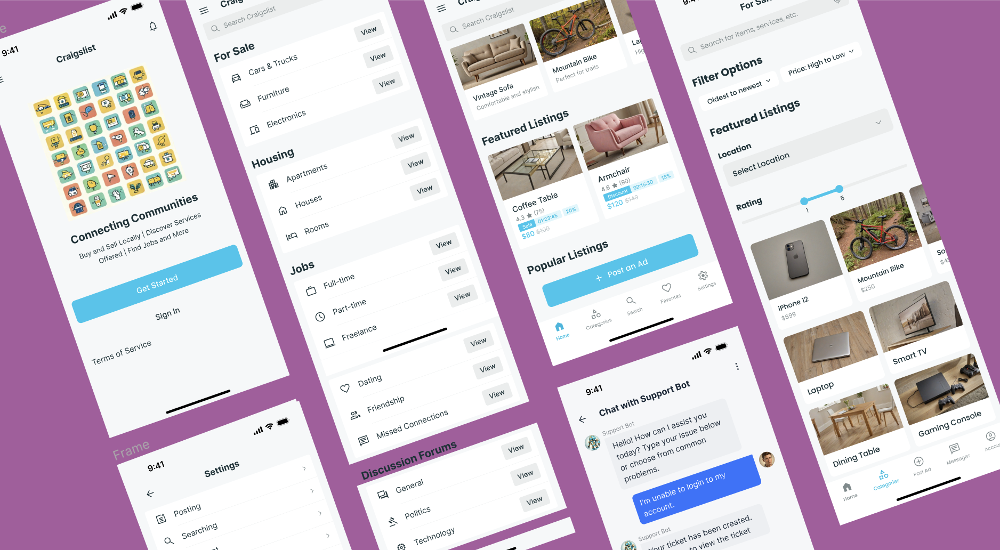

Craigslist Case Study
OVERVIEW
At a glance, this website contains over 20 pages, and has a few functionally embedded elements. Its complex and confusing UI can make it challenging for visitors to browse and locate the content they're looking for. Individuals seeking to exchange, purchase, sell, or rent different products and services go to Craigslist to locate listings in their neighborhood.
Role
This is my academic project and I worked on the scripts of user interviews & usability testing, creating personas, and writing learnings & analysis.
Design
I worked on the internal architecture of the application, wireframes, and both low & mid-fidelity prototypes.
Skills & Tools
- 🎨 Prototyping
- 💻 Figma
- 📝 Notion
- 🔍 User Research
- ✏️ Wireframing
- 🛠️ Justinmind
PROBLEM STATEMENT
Users struggle with finding relevant listings as category mappings don't align with their expectations, while the lack of feedback mechanisms causes uncertainty in interactions.
"How can Craigslist's user interface and experience be improved to enhance the visibility of critical information, provide clearer feedback to users, ensure intuitive affordances, and better align category structures with users' expectations, thereby making the site easier to navigate and use for its diverse audience?"
WORK FLOW
The UX design process I employed for this project follows a comprehensive, user-centered approach. It begins with in-depth research through user interviews, followed by a synthesis phase where I develop user personas. The ideation stage involves sketching potential screen designs, which are then refined based on feedback from initial user testing.

INTERVIEW QUESTIONS
I led the user interviews as the only member on the team with prior experience in conducting user research.
Criteria
Participants were selected based on their frequent use of Craigslist for buying or selling items and their familiarity with similar online platforms.
Key Questions
- Do you feel that users can easily find and purchase the products they are looking for on the website?
- Were there any tasks you performed on the website that you found difficult or frustrating?
- Do you find the layout of the website is straightforward and simple to navigate?
- How do you think the layout could be improved to make it more user-friendly?
- Do you have any specific suggestions?
- On a scale of 1 to 5, how concerned are you about privacy and data security in ad websites?
USER PERSONAS
The study focuses on two primary user groups: buyers seeking efficient communication and explorers looking for streamlined search functionality. By examining their unique needs, I aim to propose innovative solutions that enhance the user experience on Craigslist.

.png)
These insights have led to the development of two distinct prototypes: one focusing on live chat functionality and the other on enhanced filtering capabilities.
PROTOTYPES
Low Fidelity Prototyping
The prototype design looks to be a basic sketch or wireframe that depicts several layout and interaction aspects for a website or application. I started with paper and pencil sketches for our screen designs.
Task 1: Support Ticket Submission

This prototype addresses a design issue found through heuristic review while also incorporating insights from competition analysis to ensure alignment with industry standards and user expectations.
Task 2: Product Filtering Implementation

The design choices in the prototype were made intentionally to address specific design issues identified through competitive analysis.
High Fidelity Prototyping
These wireframes perform well during the design exploration stage. These assisted us in validating the design before proceeding to the visual design phase.
Prototype 1: Live Chat Support
Incorporating user feedback is critical for enhancing products and ensuring they match customer expectations. Two users who previewed this prototype stressed the significance of improving the help and support settings.


Prototype 2: Enhanced Filtering
User feedback led to the addition of location filtering and rating systems to improve the search experience and build trust in the platform.

COGNITIVE WALKTHROUGH
- Given the user a task to do
- Observed them performing task
- Identified what they are searching for and whether there are issues with the process
- Documented what they said and do on each web page
| # | What was the user's goal? | Is the action available? | Does the action or label match the goal? | Is there good feedback? |
|---|---|---|---|---|
| 1 | Create a support ticket or raise an issue with Craigslist Baltimore in prototype 1 | Yes, there is an option for "Live Chat" and "Contact Us/Raise Tickets" in the help pages menu | Yes, the "Contact Us/Raise Tickets" option directly matches the goal of creating a support ticket | Yes, after completing the steps, there is a confirmation message saying "Your ticket has been created successfully" |
| 2 | Navigate back to the home page Is the action available in prototype 1 | Yes, there is an option to "Click here to navigate to home page" in all three frames | Yes, the label directly matches the goal of navigating to the home page | While no explicit feedback is shown, navigating to the home page would likely provide a clear indication of successful navigation |
| 3 | Finding a job listing for a software developer role in prototype 2 | Yes, the "Jobs" category link is prominently displayed on the main page | Yes, the "Jobs" label directly matches the user's goal of finding job listings | The search results page displays placeholders for job listings, indicating progress toward the goal |
MY LEARNINGS
Through this project, I deepened my understanding of user experience design and research. Leading user interviews helped me develop skills in gathering and analyzing user feedback, which I then applied to create more user-centered design solutions.
- Conduct thorough competitive analysis to benchmark design standards.
- Develop user personas that accurately reflect the needs and behaviors of diverse users
- Prototype solutions that improve core features like filtering options and live chat functionality, ensuring a more intuitive user experience.